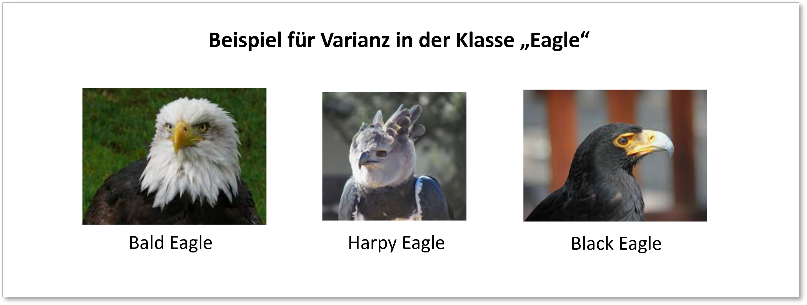

Notebook 1 - Datengewinnung
Contents
Notebook 1 - Datengewinnung#
von Annika Scheug und Oliver Schabe
Da es Im Internet bereits eine Vielzahl an Bilderdatensets und Bilderdatenbanken mit darauf aufbauenden Lösungen gibt, haben wir uns dazu entschieden, unser eigenes Datenset für eine Bilderklassifikation zu erstellen.
Dazu nutzen wir Selenium, ein open source Tool zur Automatisierung von Browseroperationen.
Mit Hilfe von Selenium durchsuchen wir Google Bilder automatisiert nach bestimmten Suchbegriffen und speichern die gefunden Bildern lokal auf unserem Rechner ab.
Auf Basis des so generierten Datensets soll dann ein Neuronales Netz zur Erkennung von Bildern trainiert werden. Als zu klassifizierende Objekte haben wir uns für verschiedene Vogelarten entschieden.
Die Interclass Varianz soll dabei nicht zu hoch sein, um eine angemessene Schwierigkeit sicherzustellen (da alles Vögel sind und in der Regel Schnabel, Flügel etc. haben). Um ein gutes Modell zu entwicklen, sollte die Interclass Varianz allrdings auch nicht zu niedrig sein, da sonst die richtige Klassifizierung sehr schwierig werden könnte.
Auf Basis dieser Überlegung haben wir uns für folgende 9 Vogelarten entschieden, welche viele Merkmale wie Flügel und Schnäbel teilen, sich allerdings optisch stark genug voneinander unterscheiden um im Rahmen dieses Projektes ein gut funktionierendes Modell zu entwicklen:
eagle (Adler)
tit (Meise)
owl (Eule)
tucan (Tukan)
flamingo (Flamingo)
ostrich (Vogelstrauß)
cockatoo (Kakadu)
chicken (Huhn)
penguin (Pinguin)
Die Intraclass Varianz unterscheidet sich dabei bei den verschiedenen Klassen teilweise stark. Bei Adlern bspw. gibt es viel mehr Unterarten, die sich auch optisch voneinander Unterscheiden als bei Flamingos. Dies wird sich voraussichtlich in den Ergebnissen des Modells wiederspiegeln. Vermutlich werden Klassen mit höherer Intraclass Varianz schlechtere Ergebnisse erzielen.

Setup#
Zuerst werden die benötigten packages und libraries installiert bzw importiert.
# Installieren von Selenium
#pip install selenium
#Importieren von Selenium Libraries
from selenium import webdriver
from selenium.webdriver.support.ui import WebDriverWait
from selenium.webdriver.common.by import By
from selenium.webdriver.support import expected_conditions as EC
from selenium.webdriver.common.keys import Keys
import time
Erzeugung des Datasets#
Hier wird zunächst eine Liste erstellt, welche alle Suchbegriffe enthält, zu denen Bilder gesucht werden sollen.
# List erstellen von zu klassifizierenden Vögeln
Labels = ["eagle","tit","owl","tucan","flamingo","ostrich","cockatoo","chicken","penguin"]
Labels
['eagle',
'tit',
'owl',
'tucan',
'flamingo',
'ostrich',
'cockatoo',
'chicken',
'penguin']
Der folgende Code durchsucht mit Hilfe von Selenium Google Bilder nach den definierten Suchbegriffen und speichert die gefundenen Bilder lokal ab. Die automatisierte Navigation durch den Chrome Browser erfolgt auf Basis des “xpath”.
Der xpath gibt die genaue Platzierung eines Objekts (bspw. Google Suche Eingabefeld) im html Quellcode an.
Details zur Methode sind im Code direkt kommentiert.
# Definition einer Funktion zum Durchscrollen der Google Bilder Suchergebnisse
def scroll_to_bottom():
last_height = driver.execute_script('\
return document.body.scrollHeight')
while True:
driver.execute_script('\
window.scrollTo(0,document.body.scrollHeight)')
# kurz warten um Ergebnisse laden zu lassen
time.sleep(3)
new_height = driver.execute_script('\
return document.body.scrollHeight')
# klicken von "weitere Ergebnisse anzeigen"
try:
driver.find_element("xpath", "/html/body/div[2]/c-wiz/div[3]/div[1]/div/div/div/div[1]/div[2]/div[2]/input").click()
# kurz warten um Ergebnisse laden zu lassen
time.sleep(1.5)
except:
pass
# Prüfen ob das Ende der Seite erreicht wurde
if new_height == last_height:
break
last_height = new_height
# Schleife zum automatiserten Suchen und Downloaden von Google Bilder Suchergebnissen zu den definierten Klassen:
for birds in Labels:
# webdriver instance erstellen
driver = webdriver.Chrome(r'..\ProjectBirdClassification\chromedriver1.exe')
driver.implicitly_wait(3)
# Browser Fenster maximieren
driver.maximize_window()
# Google Images öffnen
driver.get('https://images.google.com/')
#Cookie Window akzeptieren
driver.find_element("xpath", '/html/body/div[2]/div[2]/div[3]/span/div/div/div/div[3]/div[1]/button[2]/div').click()
# Suchleiste auswählen
box = driver.find_element("xpath", '/html/body/div[1]/div[3]/form/div[1]/div[1]/div[1]/div/div[2]/input')
# Suchanfrage eingeben (Vogelarten). Um die Qualität der Suchergebnisse zu erhöhen,
# wird außerdem zum Name des Vogels noch der string "bird photo" ergänzt
box.send_keys(birds + ' bird photo')
# Suchanfrage abschicken
box.send_keys(Keys.ENTER)
# Aufrufen der zuvor definierten Scroll Funktion, um mehr als nur die ersten Suchergebniss runterladen zu können
scroll_to_bottom()
# Schleife um die ersten 600 gefunden Bilder ja Klasse zu speichern
for i in range(1, 1000):
try:
try:
# XPath der Bilder, dieser ändert sich nur an einer Stelle und zählt von 1 aufsteigend durch
# (Erstes Suchergebnis hat die 1, zweites die 2 usw. an der entsprechenden Stelle im Pfad)
print("//*[@id='islrg']/div[1]/div[" +
str(i) + "]/a[1]/div[1]/img")
img = driver.find_element("xpath",
'//*[@id="islrg"]/div[1]/div[' +
str(i) + ']/a[1]/div[1]/img')
except:
print("Element konnte nicht gefunden werden")
# Pfad, unter dem die Bilder lokal abgespeichert werden sollen
img.screenshot(r'..\ProjectBirdClassification\Bilder\\' +
birds + ' (' + str(i) + ').png')
# kurz warten um Error zu vermeiden
time.sleep(0.2)
except:
print("mistake")
# Wenn Bild nicht gefunden und gespeichert werden kann, gehen wir weiter zum nächsten Bild
continue
# Schließen des Browsers
driver.close()
C:\Users\Annika\AppData\Local\Temp\ipykernel_10368\1234777019.py:5: DeprecationWarning: executable_path has been deprecated, please pass in a Service object
driver = webdriver.Chrome(r'..\ProjectBirdClassification\chromedriver1.exe')
---------------------------------------------------------------------------
FileNotFoundError Traceback (most recent call last)
File ~\anaconda3\lib\site-packages\selenium\webdriver\common\service.py:71, in Service.start(self)
70 cmd.extend(self.command_line_args())
---> 71 self.process = subprocess.Popen(cmd, env=self.env,
72 close_fds=system() != 'Windows',
73 stdout=self.log_file,
74 stderr=self.log_file,
75 stdin=PIPE,
76 creationflags=self.creationflags)
77 except TypeError:
File ~\anaconda3\lib\subprocess.py:951, in Popen.__init__(self, args, bufsize, executable, stdin, stdout, stderr, preexec_fn, close_fds, shell, cwd, env, universal_newlines, startupinfo, creationflags, restore_signals, start_new_session, pass_fds, user, group, extra_groups, encoding, errors, text, umask)
948 self.stderr = io.TextIOWrapper(self.stderr,
949 encoding=encoding, errors=errors)
--> 951 self._execute_child(args, executable, preexec_fn, close_fds,
952 pass_fds, cwd, env,
953 startupinfo, creationflags, shell,
954 p2cread, p2cwrite,
955 c2pread, c2pwrite,
956 errread, errwrite,
957 restore_signals,
958 gid, gids, uid, umask,
959 start_new_session)
960 except:
961 # Cleanup if the child failed starting.
File ~\anaconda3\lib\subprocess.py:1420, in Popen._execute_child(self, args, executable, preexec_fn, close_fds, pass_fds, cwd, env, startupinfo, creationflags, shell, p2cread, p2cwrite, c2pread, c2pwrite, errread, errwrite, unused_restore_signals, unused_gid, unused_gids, unused_uid, unused_umask, unused_start_new_session)
1419 try:
-> 1420 hp, ht, pid, tid = _winapi.CreateProcess(executable, args,
1421 # no special security
1422 None, None,
1423 int(not close_fds),
1424 creationflags,
1425 env,
1426 cwd,
1427 startupinfo)
1428 finally:
1429 # Child is launched. Close the parent's copy of those pipe
1430 # handles that only the child should have open. You need
(...)
1433 # pipe will not close when the child process exits and the
1434 # ReadFile will hang.
FileNotFoundError: [WinError 2] Das System kann die angegebene Datei nicht finden
During handling of the above exception, another exception occurred:
WebDriverException Traceback (most recent call last)
Input In [5], in <cell line: 2>()
1 # Schleife zum automatiserten Suchen und Downloaden von Google Bilder Suchergebnissen zu den definierten Klassen:
2 for birds in Labels:
3
4 # webdriver instance erstellen
----> 5 driver = webdriver.Chrome(r'..\ProjectBirdClassification\chromedriver1.exe')
6 driver.implicitly_wait(3)
7 # Browser Fenster maximieren
File ~\anaconda3\lib\site-packages\selenium\webdriver\chrome\webdriver.py:69, in WebDriver.__init__(self, executable_path, port, options, service_args, desired_capabilities, service_log_path, chrome_options, service, keep_alive)
66 if not service:
67 service = Service(executable_path, port, service_args, service_log_path)
---> 69 super().__init__(DesiredCapabilities.CHROME['browserName'], "goog",
70 port, options,
71 service_args, desired_capabilities,
72 service_log_path, service, keep_alive)
File ~\anaconda3\lib\site-packages\selenium\webdriver\chromium\webdriver.py:89, in ChromiumDriver.__init__(self, browser_name, vendor_prefix, port, options, service_args, desired_capabilities, service_log_path, service, keep_alive)
86 raise AttributeError('service cannot be None')
88 self.service = service
---> 89 self.service.start()
91 try:
92 super().__init__(
93 command_executor=ChromiumRemoteConnection(
94 remote_server_addr=self.service.service_url,
95 browser_name=browser_name, vendor_prefix=vendor_prefix,
96 keep_alive=keep_alive, ignore_proxy=_ignore_proxy),
97 options=options)
File ~\anaconda3\lib\site-packages\selenium\webdriver\common\service.py:81, in Service.start(self)
79 except OSError as err:
80 if err.errno == errno.ENOENT:
---> 81 raise WebDriverException(
82 "'{}' executable needs to be in PATH. {}".format(
83 os.path.basename(self.path), self.start_error_message)
84 )
85 elif err.errno == errno.EACCES:
86 raise WebDriverException(
87 "'{}' executable may have wrong permissions. {}".format(
88 os.path.basename(self.path), self.start_error_message)
89 )
WebDriverException: Message: 'chromedriver1.exe' executable needs to be in PATH. Please see https://chromedriver.chromium.org/home
Mit der hier verwendeten Methode können auch einfach für andere Klassifikationsaufgaben Bilder gewonnen werden um Modelle zur Erkennung von anderen Objekten zu trainieren. Es müssen lediglich die Suchbegriffe in der oben definierten Liste ausgetauscht werden.
Nachteil der verwendeten Methode ist die teilweise durchmischte Qualität der Suchergebnisse. Immer wieder tauchen Bilder unter dem Suchbegriff auf, welche nicht das gesuchte Objekt abbilden oder in sehr abgeänderter/abstrakter Form. Diese müssen dann manuell entfernt werden, um eine hohe Qualität das Datensets sicherzsutellen.
Die hier gewonnen Bilder sollen nun in einem nächste Notebook zum Trainieren eines CNN verwendet werden.